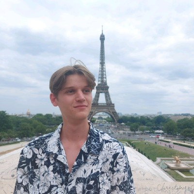
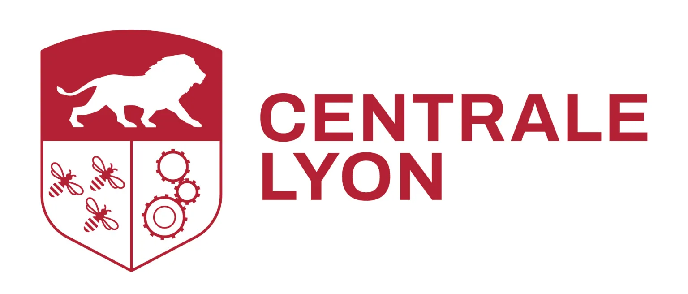
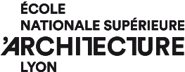
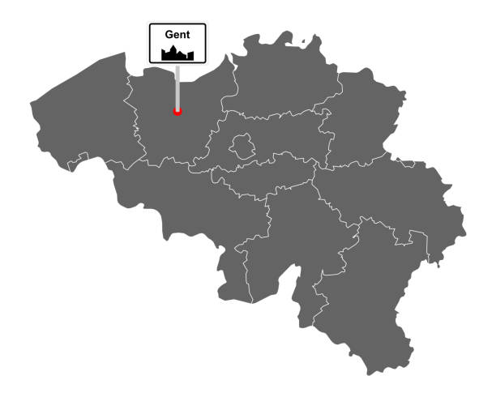
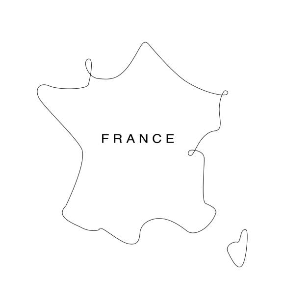

À propos
Je suis étudiant en double cursus à Centrale Lyon (ingénierie généraliste) et à l’ENSAL (architecture), avec une approche transversale entre technologie, conception d’espace et développement de solutions innovantes.
Je suis étudiant en double cursus à Centrale Lyon (ingénierie généraliste) et à l’ENSAL (architecture), avec une approche transversale entre technologie, conception d’espace et développement de solutions innovantes.

Après deux années de cycle prépartoire intégré à Centrale Lyon au sein de la première promo de CapECL, j’ai intégré Centrale Lyon, où j’ai développé une appétence forte pour les technologies du numérique, le design produit, et l’innovation technique.
En parallèle, j’ai rejoint l’ENSAL dans le cadre d’un double diplôme, afin d’approfondir ma sensibilité à l’espace, à la matérialité et à la conception architecturale.
Aujourd’hui, je cherche à croiser ces deux mondes pour penser des systèmes, des objets et des lieux qui soient à la fois fonctionnels, esthétiques, et humains.


Je suis né à Gand, en Flandre, la région néerlandophone de Belgique.

Gand, Belgique — mon point de départ
En 2019, je suis arrivé en France pour entrer au lycée. Cette transition m’a permis de devenir bilingue en néerlandais et en français, et a renforcé ma sensibilité aux questions linguistiques, culturelles et identitaires. Aujourd’hui, cette expérience interculturelle nourrit ma manière de penser l’architecture, l’ingénierie, et les interactions humaines.

France — mon point d'arrivé